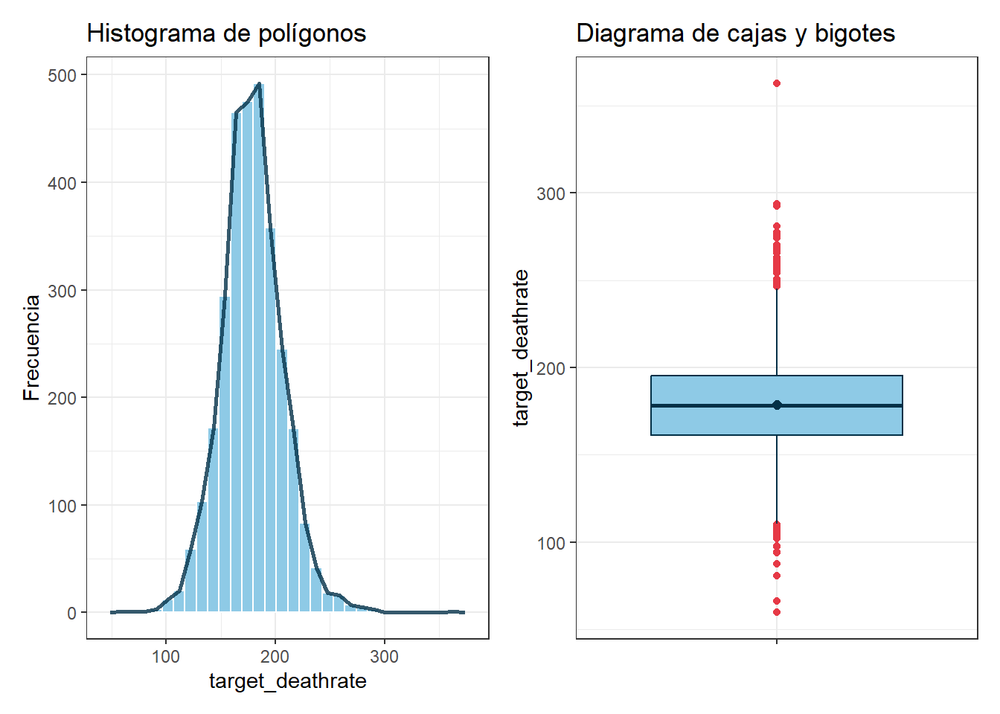
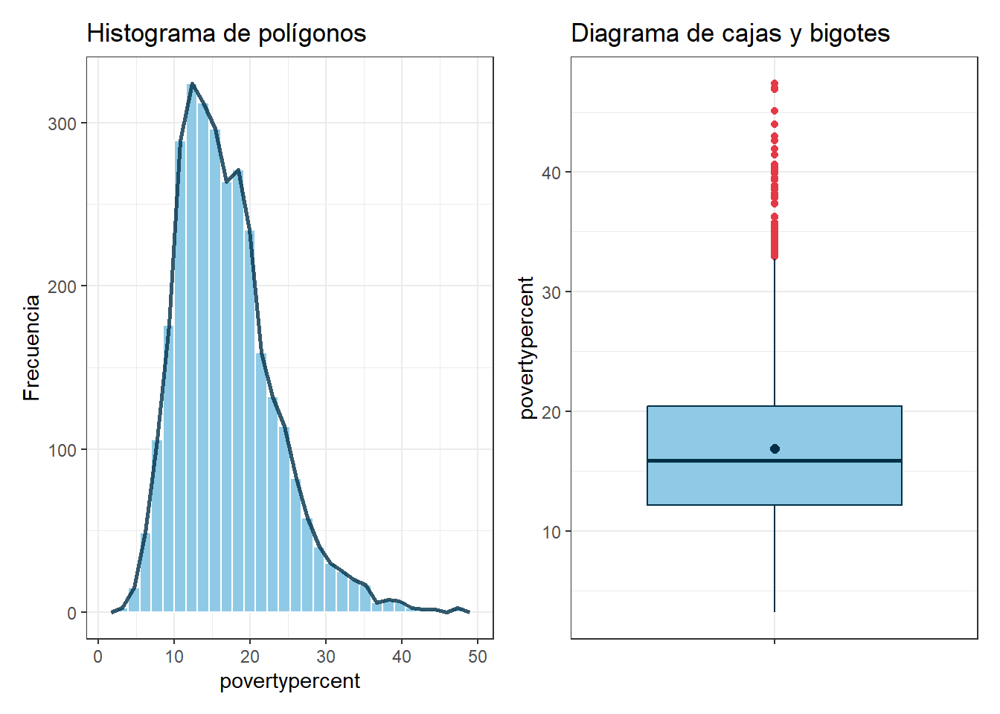
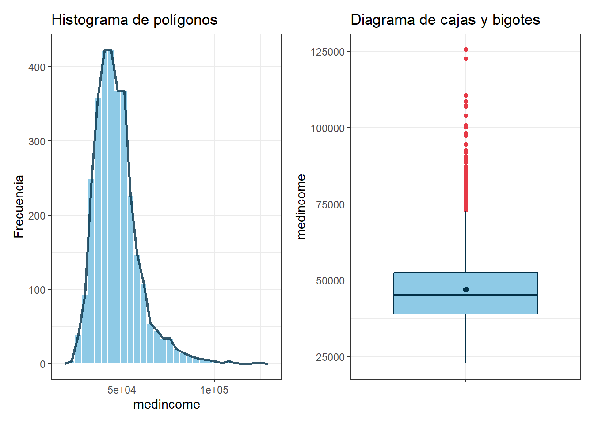
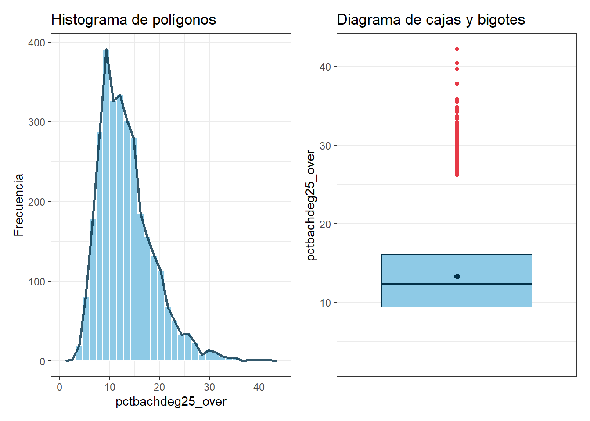
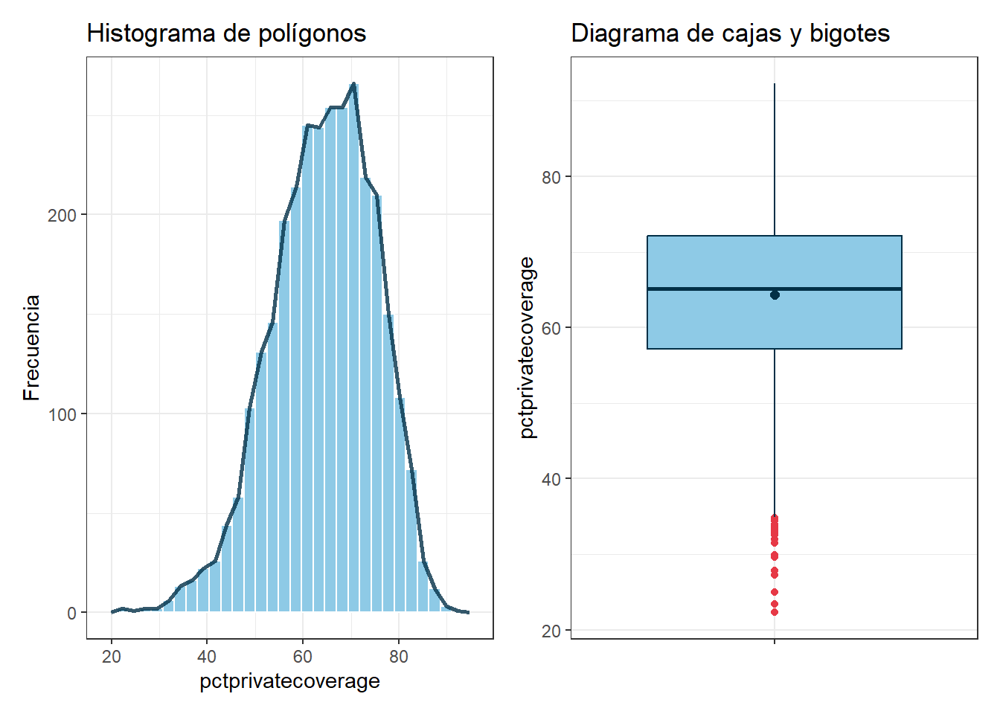
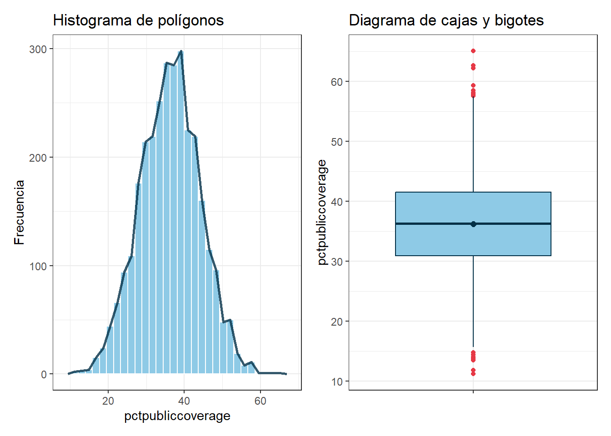
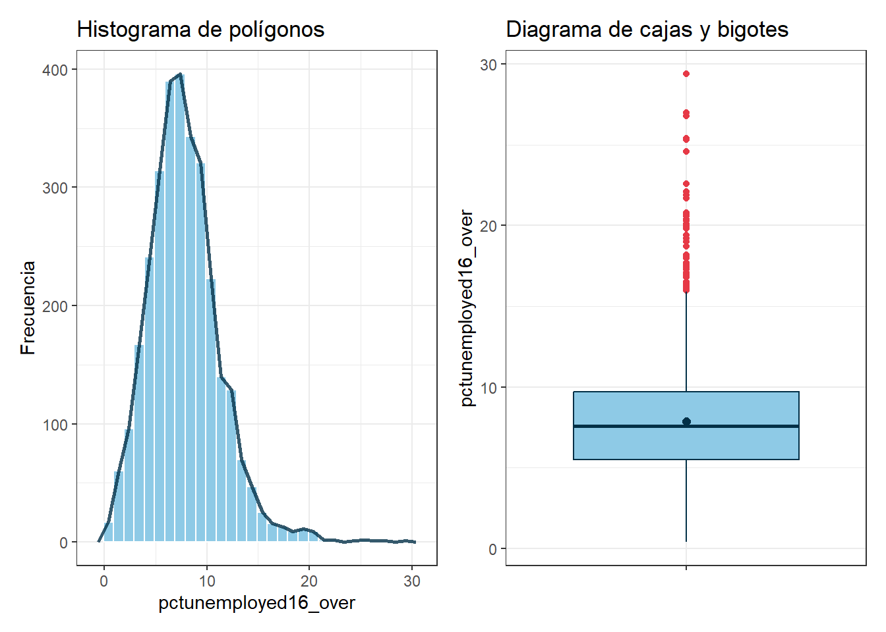

Chapter 1 EDA
Carguemos las librerias
library(tidyverse)
library(Amelia)
library(dplyr)
library(moments)
library(ggplot2)
library(patchwork)
library(readxl)
library(effsize)
library(openintro)
library(nortest)
library(car)
library(coin)
library(BSDA)
library(rstatix)Conjunto de datos
Muestrame las 5 primeras filas
## avganncount avgdeathsperyear target_deathrate incidencerate medincome
## 1 1397 469 164.9 489.8 61898
## 2 173 70 161.3 411.6 48127
## 3 102 50 174.7 349.7 49348
## 4 427 202 194.8 430.4 44243
## 5 57 26 144.4 350.1 49955
## popest2015 povertypercent studypercap binnedinc medianage
## 1 260131 11.2 499.74820 (61494.5, 125635] 39.3
## 2 43269 18.6 23.11123 (48021.6, 51046.4] 33.0
## 3 21026 14.6 47.56016 (48021.6, 51046.4] 45.0
## 4 75882 17.1 342.63725 (42724.4, 45201] 42.8
## 5 10321 12.5 0.00000 (48021.6, 51046.4] 48.3
## medianagemale medianagefemale geography percentmarried
## 1 36.9 41.7 Kitsap County, Washington 52.5
## 2 32.2 33.7 Kittitas County, Washington 44.5
## 3 44.0 45.8 Klickitat County, Washington 54.2
## 4 42.2 43.4 Lewis County, Washington 52.7
## 5 47.8 48.9 Lincoln County, Washington 57.8
## pctnohs18_24 pcths18_24 pctsomecol18_24 pctbachdeg18_24 pcths25_over
## 1 11.5 39.5 42.1 6.9 23.2
## 2 6.1 22.4 64.0 7.5 26.0
## 3 24.0 36.6 NA 9.5 29.0
## 4 20.2 41.2 36.1 2.5 31.6
## 5 14.9 43.0 40.0 2.0 33.4
## pctbachdeg25_over pctemployed16_over pctunemployed16_over pctprivatecoverage
## 1 19.6 51.9 8.0 75.1
## 2 22.7 55.9 7.8 70.2
## 3 16.0 45.9 7.0 63.7
## 4 9.3 48.3 12.1 58.4
## 5 15.0 48.2 4.8 61.6
## pctprivatecoveragealone pctempprivcoverage pctpubliccoverage
## 1 NA 41.6 32.9
## 2 53.8 43.6 31.1
## 3 43.5 34.9 42.1
## 4 40.3 35.0 45.3
## 5 43.9 35.1 44.0
## pctpubliccoveragealone pctwhite pctblack pctasian pctotherrace
## 1 14.0 81.78053 2.5947283 4.8218571 1.8434785
## 2 15.3 89.22851 0.9691025 2.2462326 3.7413515
## 3 21.1 90.92219 0.7396734 0.4658982 2.7473583
## 4 25.0 91.74469 0.7826260 1.1613587 1.3626432
## 5 22.7 94.10402 0.2701920 0.6658304 0.4921355
## pctmarriedhouseholds birthrate
## 1 52.85608 6.118831
## 2 45.37250 4.333096
## 3 54.44487 3.729488
## 4 51.02151 4.603841
## 5 54.02746 6.796657La estructura de los datos
## 'data.frame': 3047 obs. of 33 variables:
## $ avganncount : num 1397 173 102 427 57 ...
## $ avgdeathsperyear : int 469 70 50 202 26 152 97 71 36 1380 ...
## $ target_deathrate : num 165 161 175 195 144 ...
## $ incidencerate : num 490 412 350 430 350 ...
## $ medincome : int 61898 48127 49348 44243 49955 52313 37782 40189 42579 60397 ...
## $ popest2015 : int 260131 43269 21026 75882 10321 61023 41516 20848 13088 843954 ...
## $ povertypercent : num 11.2 18.6 14.6 17.1 12.5 15.6 23.2 17.8 22.3 13.1 ...
## $ studypercap : num 499.7 23.1 47.6 342.6 0 ...
## $ binnedinc : chr "(61494.5, 125635]" "(48021.6, 51046.4]" "(48021.6, 51046.4]" "(42724.4, 45201]" ...
## $ medianage : num 39.3 33 45 42.8 48.3 45.4 42.6 51.7 49.3 35.8 ...
## $ medianagemale : num 36.9 32.2 44 42.2 47.8 43.5 42.2 50.8 48.4 34.7 ...
## $ medianagefemale : num 41.7 33.7 45.8 43.4 48.9 48 43.5 52.5 49.8 37 ...
## $ geography : chr "Kitsap County, Washington" "Kittitas County, Washington" "Klickitat County, Washington" "Lewis County, Washington" ...
## $ percentmarried : num 52.5 44.5 54.2 52.7 57.8 50.4 54.1 52.7 55.9 50 ...
## $ pctnohs18_24 : num 11.5 6.1 24 20.2 14.9 29.9 26.1 27.3 34.7 15.6 ...
## $ pcths18_24 : num 39.5 22.4 36.6 41.2 43 35.1 41.4 33.9 39.4 36.3 ...
## $ pctsomecol18_24 : num 42.1 64 NA 36.1 40 NA NA 36.5 NA NA ...
## $ pctbachdeg18_24 : num 6.9 7.5 9.5 2.5 2 4.5 5.8 2.2 1.4 7.1 ...
## $ pcths25_over : num 23.2 26 29 31.6 33.4 30.4 29.8 31.6 32.2 28.8 ...
## $ pctbachdeg25_over : num 19.6 22.7 16 9.3 15 11.9 11.9 11.3 12 16.2 ...
## $ pctemployed16_over : num 51.9 55.9 45.9 48.3 48.2 44.1 51.8 40.9 39.5 56.6 ...
## $ pctunemployed16_over : num 8 7.8 7 12.1 4.8 12.9 8.9 8.9 10.3 9.2 ...
## $ pctprivatecoverage : num 75.1 70.2 63.7 58.4 61.6 60 49.5 55.8 55.5 69.9 ...
## $ pctprivatecoveragealone: num NA 53.8 43.5 40.3 43.9 38.8 35 33.1 37.8 NA ...
## $ pctempprivcoverage : num 41.6 43.6 34.9 35 35.1 32.6 28.3 25.9 29.9 44.4 ...
## $ pctpubliccoverage : num 32.9 31.1 42.1 45.3 44 43.2 46.4 50.9 48.1 31.4 ...
## $ pctpubliccoveragealone : num 14 15.3 21.1 25 22.7 20.2 28.7 24.1 26.6 16.5 ...
## $ pctwhite : num 81.8 89.2 90.9 91.7 94.1 ...
## $ pctblack : num 2.595 0.969 0.74 0.783 0.27 ...
## $ pctasian : num 4.822 2.246 0.466 1.161 0.666 ...
## $ pctotherrace : num 1.843 3.741 2.747 1.363 0.492 ...
## $ pctmarriedhouseholds : num 52.9 45.4 54.4 51 54 ...
## $ birthrate : num 6.12 4.33 3.73 4.6 6.8 ...Veamos si hay datos faltantes
## NA_avganncount NA_avgdeathsperyear NA_target_deathrate NA_incidencerate
## 1 0 0 0 0
## NA_medincome NA_popest2015 NA_povertypercent NA_studypercap NA_binnedinc
## 1 0 0 0 0 0
## NA_medianage NA_medianagemale NA_medianagefemale NA_geography
## 1 0 0 0 0
## NA_percentmarried NA_pctnohs18_24 NA_pcths18_24 NA_pctsomecol18_24
## 1 0 0 0 2285
## NA_pctbachdeg18_24 NA_pcths25_over NA_pctbachdeg25_over NA_pctemployed16_over
## 1 0 0 0 152
## NA_pctunemployed16_over NA_pctprivatecoverage NA_pctprivatecoveragealone
## 1 0 0 609
## NA_pctempprivcoverage NA_pctpubliccoverage NA_pctpubliccoveragealone
## 1 0 0 0
## NA_pctwhite NA_pctblack NA_pctasian NA_pctotherrace NA_pctmarriedhouseholds
## 1 0 0 0 0 0
## NA_birthrate
## 1 0Otra forma de detectar valores faltantes

Ahora hagamos la imputacion de datos faltantes
data_cancer %>%
mutate(across(
where(is.numeric),
~ ifelse(is.na(.),mean(., na.rm= TRUE), .)
)) -> dfVerificar si tiene datos faltantes nuevamente
## NA_avganncount NA_avgdeathsperyear NA_target_deathrate NA_incidencerate
## 1 0 0 0 0
## NA_medincome NA_popest2015 NA_povertypercent NA_studypercap NA_binnedinc
## 1 0 0 0 0 0
## NA_medianage NA_medianagemale NA_medianagefemale NA_geography
## 1 0 0 0 0
## NA_percentmarried NA_pctnohs18_24 NA_pcths18_24 NA_pctsomecol18_24
## 1 0 0 0 0
## NA_pctbachdeg18_24 NA_pcths25_over NA_pctbachdeg25_over NA_pctemployed16_over
## 1 0 0 0 0
## NA_pctunemployed16_over NA_pctprivatecoverage NA_pctprivatecoveragealone
## 1 0 0 0
## NA_pctempprivcoverage NA_pctpubliccoverage NA_pctpubliccoveragealone
## 1 0 0 0
## NA_pctwhite NA_pctblack NA_pctasian NA_pctotherrace NA_pctmarriedhouseholds
## 1 0 0 0 0 0
## NA_birthrate
## 1 01.1 Análisis exploratorio de ‘target_deathrate’ (Variable respuesta)
A continuación, se presentan una función para generar la tabla exploratoria univariada de una variable numérica
summarise_numeric <- function(df, var) {
df %>%
summarise(
n = n(),
media = mean({{ var }}),
desv_est = sd({{ var }}),
mediana = median({{ var }}),
RIC = IQR({{ var }}),
Q1 = quantile({{ var }}, 0.25),
Q3 = quantile({{ var }}, 0.75),
min = min({{ var }}),
max = max({{ var }}),
curtosis = kurtosis({{ var }}),
Coef_asim = skewness({{ var }})
)
}Realicemos el resumen estadístico de la variable target_deathrate
## n media desv_est mediana RIC Q1 Q3 min max curtosis Coef_asim
## 1 3047 178.6641 27.75151 178.1 34 161.2 195.2 59.7 362.8 4.350431 0.2745889Se registraron un total de 3047 registros de tasas de muertes causadas por cáncer con una tasa media de 178.66 (DE = 27.75). Además, el 50% de las tasas de muerte son menores o iguales a 178.1 (RIC = 34), es decir, son muy cercanos a la media, lo que sugiere una distribución relativamente centrada. Por otro lado, el 25% son a lo sumo 161.2, y el 75% no supera 195.2. Además, el rango de los datos es de 303.1, siendo la tasa mínima 59.7 y la máxima 362.8. Por otro lado, se evidencia que las tasas de muerte poseen una forma leptocúrtica (curtosis = 4.35>3), es decir, con un pico algo más marcado y colas más pesadas que la normal. Además, los datos presentan una ligera asimetría positiva o sesgo hacia la derecha (Coef_asim = 0.27), con lo cual se observa que existen algunas tasas excesivamente más altas que la mayoría.
A continuación, se presentan una función para generar los gráficos exploratorios univariados de una variable numérica
plot_univariado <- function(df, var) {
# Boxplot
p_box <- df %>%
ggplot(aes(x = "", y = {{ var }})) +
geom_boxplot(fill = "#8ecae6", color = "#023047",
outlier.color = "#e63946") +
stat_summary(fun = mean, geom = 'point', shape = 20, size = 3, color = '#023047') +
labs(title = "Diagrama de cajas y bigotes", x = NULL, y = rlang::as_label(rlang::enquo(var))) +
theme_bw()
# Histograma de polígonos
p_hist <- df %>%
ggplot(aes(x = {{ var }})) +
geom_histogram(aes(y = after_stat(count)), fill = "#8ecae6", color = "white", bins = 30) +
geom_freqpoly(color = "#023047", linewidth = 1, alpha = 0.8, bins = 30) +
labs(title = "Histograma de polígonos", x = rlang::as_label(rlang::enquo(var)), y = "Frecuencia") +
theme_bw()
# Combinar los dos plots
p_hist + p_box
}Observemos la distribución de la variable objetivo target_deathrate a través de un diagrama de cajas y bigotes y un histograma de polígonos

La distribución de target_deathrate presenta una ligera asimetría a la
derecha, confirmando lo expuesto por el coeficiente de asimetría positivo.
Además, la variable cuenta con un número considerable de valores atípicos
tanto en la cola inferior como en la superior, es decir, existen regiones
con tasas de muerte muy alejadas de la mayoría, particularmente
por encima de 250 y por debajo de 110 aproximadamente.
Por otro lado, la media (178.66) es prácticamente igual a la mediana (178.1), lo cual es consistente con una distribución casi simétrica en su núcleo central, a pesar de la ligera asimetría generada por los valores extremos en la cola derecha. La forma del histograma exhibe un pico marcado alrededor del valor central, lo que respalda la forma leptocúrtica previamente hallada (curtosis = 4.35), indicando una mayor concentración de datos cerca de la media y colas más pesadas que las de una distribución normal.
La presencia simultánea de valores atípicos en ambos extremos sugiere una heterogeneidad importante entre regiones: mientras algunas zonas presentan tasas de mortalidad excepcionalmente bajas (posiblemente asociadas a mejor acceso a salud o detección temprana), otras muestran tasas alarmantemente altas, lo que podría estar vinculado a factores socioeconómicos adversos como pobreza elevada o baja cobertura médica, variables que se explorarán más adelante en el análisis.
1.2 Análisis exploratorio univariado de cada variable explicativa
## n media desv_est mediana RIC Q1 Q3 min max curtosis Coef_asim
## 1 3047 16.87818 6.409087 15.9 8.25 12.15 20.4 3.2 47.4 4.272006 0.9302543
## n media desv_est mediana RIC Q1 Q3 min max curtosis
## 1 3047 47063.28 12040.09 45207 13609.5 38882.5 52492 22640 125635 6.705259
## Coef_asim
## 1 1.407377
## n media desv_est mediana RIC Q1 Q3 min max curtosis Coef_asim
## 1 3047 13.28202 5.394756 12.3 6.7 9.4 16.1 2.5 42.2 4.73255 1.094298
## n media desv_est mediana RIC Q1 Q3 min max curtosis Coef_asim
## 1 3047 64.35494 10.64706 65.1 14.9 57.2 72.1 22.3 92.3 2.994335 -0.3933435
## n media desv_est mediana RIC Q1 Q3 min max curtosis
## 1 3047 36.25264 7.841741 36.3 10.65 30.9 41.55 11.2 65.1 2.908984
## Coef_asim
## 1 -0.005432924
## n media desv_est mediana RIC Q1 Q3 min max curtosis Coef_asim
## 1 3047 7.852412 3.452371 7.6 4.2 5.5 9.7 0.4 29.4 5.291033 0.8906224